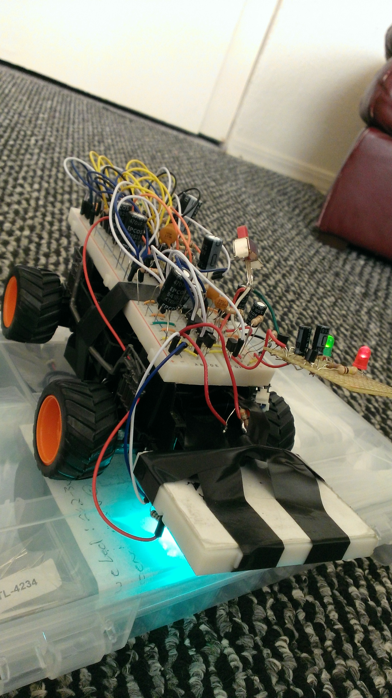
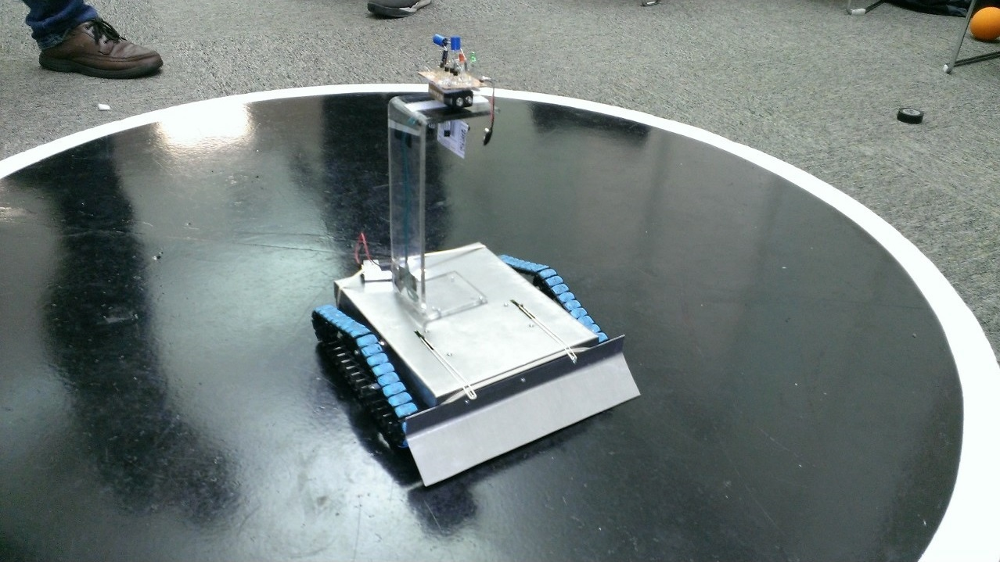

Greetings From the Streets of Pompeii!

Robo-Car
My fully analog design, earning 1st place in a line following competition.

Sumo-Bot!
A battle-royale champion sumo-tank built from scratch and analog circuitry (twin-linked rubberband guns included).
OU Supercomputer
Selfie in front of Boomer, the University of Oklahoma supercomputer!

Sorry
This is my cat, Sorry. She's a tortoise-shell that longs for eternal combat among the halls of Valhalla. She's also pretty fond of wet food.